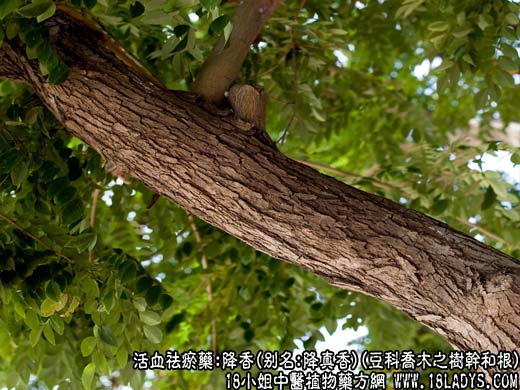
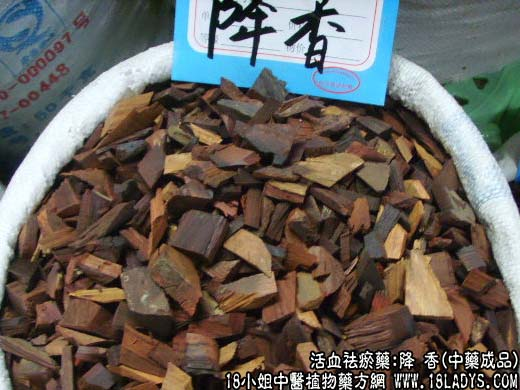

【中药概述】
降香，别名：降真香、紫藤香、降真、花梨母，为豆科乔木植物降香檀的树干和根。辛，温。归肝经。
1．活血行气：用于胸胁疼痛、心绞痛等，可配丹参等同用；跌打伤痛、瘀血疼痛，可与乳香，没药等同用。
2．辟秽降逆：用于秽浊内阻，呕吐腹痛，常与藿香，木香，肉桂等同用。
3．止血：用于创伤出血，常与象皮，血竭等配合应用。
【药物形态】
本品呈类圆柱形或不规则块状。表面紫红色或红褐色，切面有致密的纹理。质硬，有油性。气微香，味微苦。
【药理作用】有增加冠流量，减慢心律和抗炎作用。
【化学成分】含黄檀素等成分。
【用量用法】6——15g，水煎服（宜后下）。